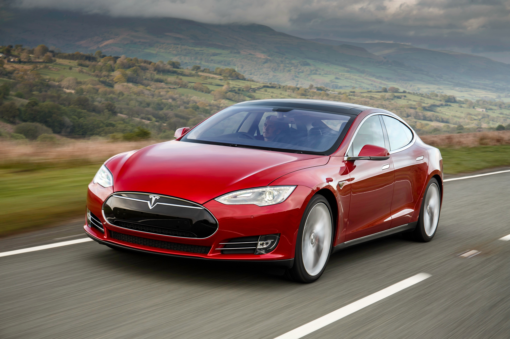

Experiencia cinematográfica
Una pantalla táctil de 17" con inclinación de izquierda a derecha ofrece una resolución de 2200 x 1300, colores reales y una capacidad de respuesta excepcional para juegos, películas y más.
Entorno perfecto
Las salidas de aire están ocultas en toda la cabina, mientras que los controles de temperatura de tres zonas, los asientos ventilados y la filtración HEPA brindan el ambiente perfecto.